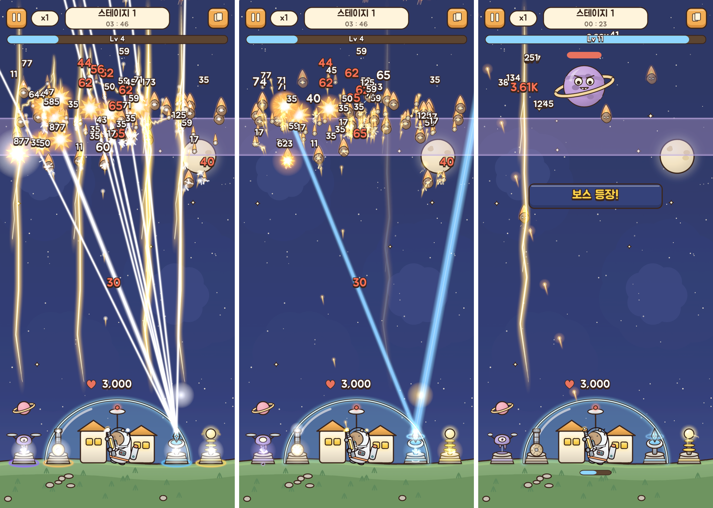

터렛 대기 효과 — 2단계 (터렛 6종 모두)
2026-11-16 · 터렛_대기_효과_시안.html 의견대로: 벼락탑 · 레이저 포 그대로 + 나머지 4종 진행 + 터렛 아래 강조 고리 제거 · 자동 시험 오류 0 · 게임에서 1/30초 간격으로 3초씩 찍은 GIF · 왼쪽 = 효과 없음, 오른쪽 = 대기 효과
의견 반영 (11-16 밤 추가)
- 관통포 바퀴 0.5배로 느리게 · 드론 프로펠러도 관통포 바퀴와 같은 빠르기로 (쏠 때가 가까울수록 조금 빨라지는 것은 그대로). 아래 ① ② GIF 를 다시 찍어 바꿨습니다 — 브라우저가 옛 GIF 를 보여 주면 새로고침(F5).
- 벌집 · 미사일 · 색 네온은 "문제없음"이라 그대로. 자동 시험 오류 0.
먼저 알려 드릴 것
- 터렛 아래 빛 고리를 뺐습니다. 터렛이 놓일 때 톡 커지며 나타나는 효과(링 · 빛 · 불꽃)는 "하단" 효과가 아니라 그대로 뒀습니다 — 이것도 빼려면 말씀 주세요.
- 고친 문제 하나 (중요): 오늘 넣은 "빛 더하기" 셰이더가 스프라이트 색 · 투명도 · 뒤집기를 못 받고 있었습니다. 그래서 네온 빛(레이저 번짐 · 총구 · 불꽃 · 대기 효과)이 정한 색 대신 전부 흰색이었고, 서서히 사라지는 것도 안 됐습니다. 벌집 입구 빛이 주황 대신 회백색으로 찍혀 픽셀을 재 보고 찾았습니다.
→ 고친 뒤 레이저는 하늘색 · 벼락은 노랑 · 미사일 불꽃은 주황으로 보이고, 불꽃 · 빛이 자연스럽게 사라집니다. 앞서 "문제없음"이라고 하신 밝기는 실제론 투명도 1이었기 때문에, 레이저 · 낙뢰 밝기는 그때 보신 것에 맞춰 다시 올렸습니다. 아래 ⑤ 에서 전·뒤를 비교해 주세요. - 자동 시험에 "셰이더가 색 · 뒤집기를 받는지" 검사 줄을 넣어 다시는 놓치지 않게 했습니다.
① 관통포 — 바퀴가 돎
바퀴살 4개가 보이는 바퀴가 천천히 돌다가 쏠 때가 가까울수록 빨리 (11-16 밤 0.5배로 느리게) · 포신 끝 · 바퀴 가운데 빛


② 끈끈이 드론 — 프로펠러 · 둥실 · 눈
몸이 둥실 · 프로펠러가 돎 (11-16 밤 관통포 바퀴와 같은 빠르기로 느리게) · 눈동자가 가까운 적 쪽을 봄 · 2.5~4.5초마다 깜빡


③ 벌집 — 둘레를 도는 벌
작은 벌 3마리가 높이 · 빠르기를 달리해 빙빙(앞쪽은 벌집 앞, 뒤쪽은 뒤 · 가는 쪽을 봄) · 입구가 주황빛으로 숨쉬기


④ 유도 미사일 — 재장전
쏘면 위 미사일 2개가 상자 속으로 내려갔다가 차례로 다시 올라옴 · 상자 등 2개가 번갈아 깜빡(쏠 때가 가까울수록 빨리)


벼락탑 (1단계 · 색 고친 뒤)
작은 번개가 이제 노란빛


레이저 포 (1단계 · 색 고친 뒤)
빛 고리 · 빛 점이 이제 하늘색


⑤ 전투 화면 — 셰이더 고치기 전·뒤

왼쪽 = 고치기 전(3차, 빛이 전부 흰색) · 가운데 = 고친 뒤 같은 장면(레이저 하늘색 · 터렛 대기 효과 · 아래 고리 없음) · 오른쪽 = 보스 장면(노란 낙뢰)
⑥ 실제 게임 크기 (기지 전체)